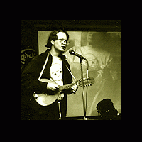

For a couple of years I was playing mandolin and accordion every Friday before showings at the Cable Car Cinema. I've also done a few stints as the in-between music for the Blood From a Turnip Late Night Puppet Salon, and for years played weekly at the Pork Chop Lounge.
Original Music
The Best Sauce is a Good Applesauce
Warble me now for the joy of the day
Rubby Ruby
Shack Nasty Jim
Instructions to My Son
Wake up in the Morning
Crummy Old Sun (Jonathan Thomas lyrics)
Honky Tonk Buck Buck Day
Goatfoot John
Donkey Bread
Blessed Are the Mucklebuckers
Hi Ohio, part 32 of "Hello America"
Ask Me about Being A Leper
9 Monkeys
Oh Gumball (Jonathan Thomas lyrics)
Doggies
Fresh Carrot
Poopernatural Sours
Ding Dong Doodle Blues
Margaret Lederhosen
Kia Idioto (Esperanto Love Song)
Mr. Zombie Gnosis
Sweet Alice
Adaptations
Machines of Loving Grace -- Richard Brautigan
Footnote to Howl -- Allen Ginsberg
Evito's theme -- Andrew Lloyd Webber
Goldenhair -- James Joyce
Smith & Wesson Gun -- Josh Marketos
Nancy -- Kinks
Covers
Tom Dooley -- Trad.
Blueberry Hill -- Fats Domino
This Land is Your Land -- Woody Guthrie
Man of Constant Sorrow -- Trad.
Only Love Can Break Your Heart -- Neil Young